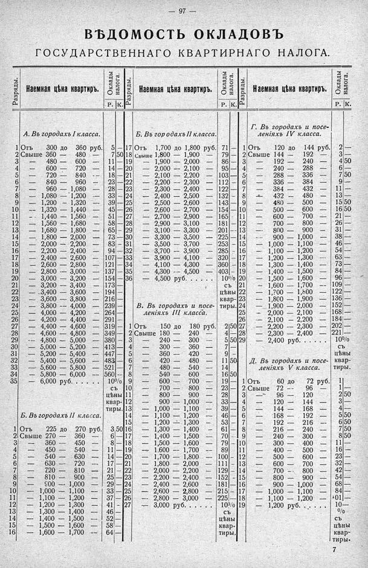

Лист источника 143
Скан

Распознанный текст
— 97 —
ВѢДОМОСТЬ ОКЛАДОВЪ
ГОСУДАРСТВЕННАГО КВАРТИРНАГО НАЛОГА.
Разряды. Наемная цѣна квартиръ. Оклады налога.
Р. К.
Разряды. Наемная цѣна квартиръ. Оклады налога.
Р. К.
Разряды. Наемная цѣна квартиръ. Оклады налога.
Р. К.
А. Въ городахъ І класса.
1 Отъ 300 до 360 руб. 5 —
2 Свыше 360 — 480 — 7 50
3 — 480 — 600 — 11 —
4 — 600 — 720 — 14 —
5 — 720 — 840 — 18 —
6 — 840 — 960 — 23 —
7 — 960 — 1,080 — 28 —
8 — 1,080 — 1,200 — 33 —
9 — 1,200 — 1,320 — 39 —
10 — 1,320 — 1,440 — 45 —
11 — 1,440 — 1,560 — 51 —
12 — 1,560 — 1,680 — 58 —
13 — 1,680 — 1,800 — 65 —
14 — 1,800 — 2,000 — 73 —
15 — 2,000 — 2,200 — 83 —
16 — 2,200 — 2,400 — 94 —
17 — 2,400 — 2,600 — 107 —
18 — 2,600 — 2,800 — 121 —
19 — 2,800 — 3,000 — 137 —
20 — 3,000 — 3,200 — 154 —
21 — 3,200 — 3,400 — 173 —
22 — 3,400 — 3,600 — 194 —
23 — 3,600 — 3,800 — 216 —
24 — 3,800 — 4,000 — 239 —
25 — 4,000 — 4,200 — 264 —
26 — 4,200 — 4,400 — 291 —
27 — 4,400 — 4,600 — 319 —
28 — 4,600 — 4,800 — 349 —
29 — 4,800 — 5,000 — 380 —
30 — 5,000 — 5,200 — 413 —
31 — 5,200 — 5,400 — 447 —
32 — 5,400 — 5,600 — 483 —
33 — 5,600 — 5,800 — 521 —
34 — 5,800 — 6,000 — 560 —
35 — 6,000 руб. . . . . . 10%
съ
цѣны
квар-
тиры.
Б. Въ городахъ ІІ класса.
1 Отъ 225 до 270 руб. 3 50
2 Свыше 270 — 360 — 6 —
3 — 360 — 450 — 8 —
4 — 450 — 540 — 11 —
5 — 540 — 630 — 14 —
6 — 630 — 720 — 17 —
7 — 720 — 810 — 21 —
8 — 810 — 900 — 25 —
9 — 900 — 1,000 — 29 —
10 — 1,000 — 1,100 — 33 —
11 — 1,100 — 1,200 — 37 —
12 — 1,200 — 1,300 — 41 —
13 — 1,300 — 1,400 — 46 —
14 — 1,400 — 1,500 — 52 —
15 — 1,500 — 1,600 — 58 —
16 — 1,600 — 1,700 — 64 —
Б. Въ городахъ ІІ класса.
17 Отъ 1,700 до 1,800 руб. 71 —
18 Свыше 1,800 — 1,900 — 79 —
19 — 1,900 — 2,000 — 86 —
20 — 2,000 — 2,100 — 95 —
21 — 2,100 — 2,200 — 103 —
22 — 2,200 — 2,300 — 112 —
23 — 2,300 — 2,400 — 122 —
24 — 2,400 — 2,500 — 132 —
25 — 2,500 — 2,600 — 143 —
26 — 2,600 — 2,700 — 154 —
27 — 2,700 — 2,900 — 165 —
28 — 2,900 — 3,100 — 181 —
29 — 3,100 — 3,300 — 201 —
30 — 3,300 — 3,500 — 225 —
31 — 3,500 — 3,700 — 253 —
32 — 3,700 — 3,900 — 285 —
33 — 3,900 — 4,100 — 320 —
34 — 4,100 — 4,300 — 360 —
35 — 4,300 — 4,500 — 403 —
36 — 4,500 руб. . . . . . 10%
съ
цѣны
квар-
тиры.
В. Въ городахъ и посе-
леніяхъ ІІІ класса.
1 Отъ 150 до 180 руб. 2 50
2 Свыше 180 — 240 — 4 —
3 — 240 — 300 — 5 50
4 — 300 — 360 — 7 —
5 — 360 — 420 — 9 —
6 — 420 — 480 — 11 50
7 — 480 — 540 — 14 —
8 — 540 — 600 — 16 50
9 — 600 — 700 — 19 —
10 — 700 — 800 — 23 —
11 — 800 — 900 — 28 —
12 — 900 — 1,000 — 33 —
13 — 1,000 — 1,100 — 39 —
14 — 1,100 — 1,200 — 46 —
15 — 1,200 — 1,300 — 53 —
16 — 1,300 — 1,400 — 61 —
17 — 1,400 — 1,500 — 70 —
18 — 1,500 — 1,600 — 79 —
19 — 1,600 — 1,700 — 89 —
20 — 1,700 — 1,800 — 100 —
21 — 1,800 — 2,000 — 111 —
22 — 2,000 — 2,200 — 129 —
23 — 2,200 — 2,400 — 152 —
24 — 2,400 — 2,600 — 181 —
25 — 2,600 — 2,800 — 215 —
26 — 2,800 — 3,000 — 225 —
27 — 3,000 руб. . . . . . 10%
съ
цѣны
квар-
тиры.
Г. Въ городахъ и посе-
леніяхъ IV класса.
1 Отъ 120 до 144 руб. 2 —
2 Свыше 144 — 192 — 3 —
3 — 192 — 240 — 4 50
4 — 240 — 288 — 6 —
5 — 288 — 336 — 7 50
6 — 336 — 384 — 9 —
7 — 384 — 432 — 11 —
8 — 432 — 480 — 13 —
9 — 480 — 500 — 15 50
10 — 500 — 600 — 16 50
11 — 600 — 700 — 21 —
12 — 700 — 800 — 26 —
13 — 800 — 900 — 31 —
14 — 900 — 1,000 — 38 —
15 — 1,000 — 1,100 — 46 —
16 — 1,100 — 1,200 — 54 —
17 — 1,200 — 1,300 — 63 —
18 — 1,300 — 1,400 — 73 —
19 — 1,400 — 1,500 — 84 —
20 — 1,500 — 1,600 — 96 —
21 — 1,600 — 1,700 — 109 —
22 — 1,700 — 1,800 — 122 —
23 — 1,800 — 1,900 — 136 —
24 — 1,900 — 2,000 — 152 —
25 — 2,000 — 2,100 — 168 —
26 — 2,100 — 2,200 — 184 —
27 — 2,200 — 2,300 — 202 —
28 — 2,300 — 2,400 — 221 —
29 — 2,400 руб. . . . . . 10%
съ
цѣны
квар-
тиры.
Д. Въ городахъ и посе-
леніяхъ V класса.
1 Отъ 60 до 72 руб. 1 —
2 Свыше 72 — 96 — 1 —
3 — 96 — 120 — 2 50
4 — 120 — 144 — 3 —
5 — 144 — 168 — 4 —
6 — 168 — 192 — 5 50
7 — 192 — 216 — 6 50
8 — 216 — 240 — 7 50
9 — 240 — 300 — 8 50
10 — 300 — 400 — 11 —
11 — 400 — 500 — 16 —
12 — 500 — 600 — 23 —
13 — 600 — 700 — 32 —
14 — 700 — 800 — 42 —
15 — 800 — 900 — 54 —
16 — 900 — 1,000 — 68 —
17 — 1,000 — 1,100 — 84 —
18 — 1,100 — 1,200 — 101 —
19 — 1,200 руб. . . . . . 10—
%
съ
цѣны
квар-
тиры.
7